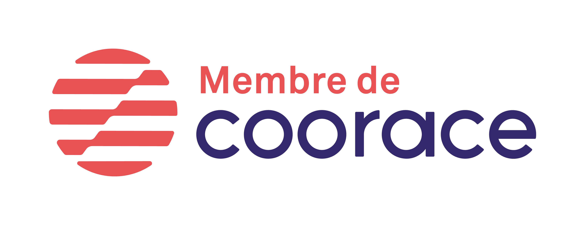

Qui sommes nous ?
Nous sommes un ensemble de deux structures spécialisée l'une dans la réinsertion de personnes par l'emploi auprès de particuliers, collectivités, commerçants, artisants, ou entreprises, l'autre dans la mise à disposition de personnel dans le domaine des "Emplois Familiaux"
- L'AMSAC (Austreberthe Multi Services Aux Chômeurs), associations intermédiaire depuis 1988, procure aux demandeurs d'emploi volontaires des missions ponctuelles de travail qui répondent à des besoins urgents, leur permettant de maintenir des droits sociaux ainsi que de découvrir des métiers. Ces missions s'inscrivent dans un parcours d'insertion élaboré avec le demandeur d'emploi. L'association assure un suivi et un accompagnement en jouant le rôle d'intermédiaire avec les organismes qui sont en mesure de régler certains problèmes de santé, de logement, de formation, d'endettement et d'autres freins à l'emploi.
L'AMSAC est une association intermédiaire déclarée sous le numéro SAP 347868135 et fait partie du réseau COORACE.
- L'ASEF (Austreberthe Service Emplois Familiaux), association mandataire et
prestataire de services, vous accompagne depuis 1992 dans l'amélioration de
votre quotidien.
Nous vous assurons un service de qualité grâce à un personnel compétent et
formé dans le domaine de l'aide à la personne et grâce à un suivi régulier de la
part de notre personnel d'encadrement.
L'ASEF assure donc le développement de l'emploi au niveau local, tout en assurant un service au plus près de vos besoins.
La qualité de nos prestations est certifiée par l'obtention de l'agrément qualité n° SAP 38839836.
